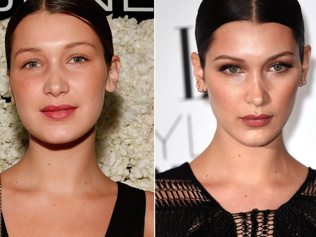
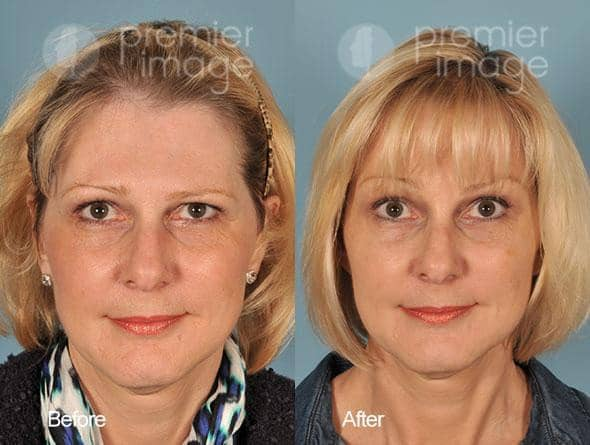

ANTES Y DESPUES
Testimonio
Me hice una rinoplastia hace seis meses y no puedo creer la diferencia que ha hecho en mi vida. Antes de la cirugía, estaba muy inseguro de mi nariz y no me sentía cómodo en mi propia piel. Pero ahora, mi nariz se ve increíblemente natural y equilibrada con el resto de mi rostro. Me siento más seguro y feliz que nunca antes, y todo gracias a la maravillosa atención y habilidad de mi cirujano estético

Testimonio
Me hice una blefaroplastia hace unos meses para eliminar las bolsas debajo de mis ojos y no puedo estar más feliz con los resultados. Antes de la cirugía, siempre parecía cansado y envejecido, pero ahora me veo y siento mucho más joven y enérgico. Mi cirujano estético hizo un trabajo increíble y no puedo agradecerle lo suficiente por su habilidad y atención al detalle
Testimonio
Después de años de luchar contra el acné y las cicatrices, me hice un tratamiento de microdermabrasión y no puedo creer la diferencia que ha hecho en mi piel. Mis cicatrices son mucho menos visibles y mi piel se siente mucho más suave y rejuvenecida. Estoy muy agradecido con mi cirujano estético por su habilidad y atención al detalle, y lo recomendaría a cualquiera que quiera mejorar la apariencia de su piel
Testimonio
Me hice una rinoplastia hace un año y mi autoestima ha aumentado enormemente desde entonces. Mi nariz siempre me había hecho sentir cohibido y poco seguro de mí mismo, pero después de la cirugía, se ve más equilibrada y natural. Estoy tan agradecido con mi cirujano por su habilidad y atención al detalle, y lo recomendaría a cualquiera que esté considerando una cirugía facial
